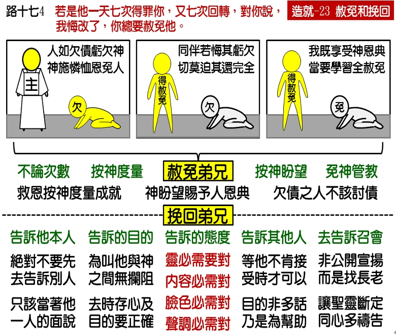

诗歌：262 首、补615 首
重要经文：
马太福音十八章二十一至二十二节：那时彼得进前来，对耶稣说，主啊，我的弟兄得罪我，我当赦免他几次？到七次么？耶稣对他说，我不是对你说到七次，乃是到七十个七次。
路加福音十七章三至五节：你们要小心，若是你的弟兄犯了罪，就责备他；他若悔改，就赦免他。若是他一天七次得罪你，又七次回转，对你说，我悔改了，你总要赦免他。使徒对主说，求主增加我们的信心。
纲目要点：
壹 赦免弟兄——太十八21~22：
一 总要赦免：耶稣说，不是七次，乃是七十个七次。
二 神的度量：主人，就动了慈心，把他释放，并且免了他的债。
三 神的盼望：神在我们身上有一个盼望：凡需要得着恩典的人，都得学习给人恩典。凡蒙恩的人，都得学习施恩典。
四 神的管教：主人就大怒，把他交给掌刑的，等他还清了所欠的债。这里有一个人落在神的管教里，神把他交给掌刑的，要等他还清所欠的债。
贰 挽回弟兄——太十八15~20：
一 告诉他本人：趁着只有他和你在一处的时候，指出他的错来。
二 告诉的目的：他若听你，你便得了你的弟兄。
三 告诉时的态度：灵、话语、态度、脸色与声调都要对。
四 告诉另外的人：他若不听，你就另外带一两个人同去，要凭两三个人的口作见证，句句都可定准。用很正当的存心，很好的态度，很温柔的话语，对他说了之后，如果他不听，你就可以去告诉另外的人。
五 告诉召会：把这一件事提出来，告诉召会的负责弟兄。
信息选读：
总要赦免
马太十八章二十一至二十二节，『那时彼得进前来，对耶稣说，主阿，我的弟兄得罪我，我当赦免他几次？到七次么？耶稣对他说，我不是对你说到七次，乃是到七十个七次。』路加十七章三至四节『你们要小心，若是你的弟兄犯了罪，就责备他；他若悔改，就赦免他。若是他一天七次得罪你，又七次回转，对你说，我悔改了，你总要赦免他。』马太福音是说，赦免弟兄不只七次，乃是到七十个七次。路加福音是说，一个弟兄一天七次得罪你，又七次回转，对你说，我悔改了，你总要赦免他。不管他的悔改是真的或是假的，只要他这样说，你就要赦免他。他的真假不是我们的事，我们总当赦免他。七次不算多，但是一天七次也不算少。同样的事，一天作七次；同一个人，一天七次向你说我得罪你；若是这样，你还会相信他是诚心认错么？恐怕你要说，他是口里说说罢了。所以路加十七章五节说，『使徒对主说，求主增加我们的信心。』他们觉得这是一个难处，一个弟兄一天七次得罪人，又七次回转，对你说，我悔改了，好像这是不可置信的，好像他们信不来，所以说，『求主增加我们的信心。』可是神的儿女在这一种的情形之下，还是应该赦免。弟兄得罪我们，我们不应该把罪留在那里一直记念着。
神的度量
主在这里引一个比喻，『诸天的国好比一个作君王的人，要和他奴仆算账。才算的时候，有人带了一个欠一万他连得银子的来。因为他没有什么可偿还的，主人吩咐把他和他的妻子儿女，并一切所有都卖了偿还。那奴仆就俯伏拜他说，宽容我，将来我都要还清。那奴仆的主人就动了慈心，把他释放，并且免了他的债。』这一个仆人在神面前所亏欠的，是千万的银子，是非常大的数目。他自己是没有力量偿还的，因为『他没有什么偿还之物。』我们对于神所有的亏欠，总是无法偿还的，与人亏欠我们的数目相比，差得太多了。每一个神的儿女对于他自己对神的亏欠，有了正当的估价，他才会对弟兄的亏欠，有宽大的赦免。我们如果忘记了自己在神面前所蒙的恩典是何等大，就可能变成一个非常寡恩的人。我们需要看见自己亏欠神的数目是何等大，才能看见别人所亏欠我们的是何等有限。 主人因为仆人没有什么偿还之物，就吩咐说，『把他和他妻子儿女，并一切所有的都卖了偿还。』其实，就是把他所有的都卖了来偿还，还是没有方法还清的，所以，『那奴仆就俯伏拜他，说，宽容我，将来我都要还清。』『那奴仆的主人就动了慈心，把他释放，并且免了他的债。』这就是福音。福音，不是神按着你的意思替你作事。虽然你说『宽容我，将来我都要还清，』主却不是说『你有多少先拿来，后来再还清；』主乃是免了你所欠的债。人的祷告祈求，远赶不上主所赐给我们的恩典。我们的主，是按着祂所有的替我们作，是按着祂所有的答应我们的祷告。这一个主人，把这一个欠他债的仆人释放了，并且免了他的债。这就是神的恩典，这就是神的度量。
神的盼望
马太十八章二十八至二十九节： 『但那奴仆出来，遇见一个和他同作奴仆的，欠他一百银币，便揪住他，掐住他的喉咙，说，你所欠的，都要偿还。那和他同作奴仆的，俯伏央求他说，宽容我，将来我必还你。』主在这里给我们看见，我们所欠的是一千万银子，别人欠我们的不过是一百银币。当我们对主说『宽容我，将来我都要还清』的时候，主不但释放了我们，并且还免了我们的债。你的同伴，就是你的弟兄，他无论如何得罪你，至多是欠你一百银币而已。他也对你说，『宽容我罢，将来我必还清。』他和你同样的盼望，同样的要求，你怎么能不宽容他呢？但是，这一个仆人『不肯，竟去把他下在监里，等他还清所欠的债。』（30。）
在神面前有一件最难看的事，就是一个得了赦免的人，竟不肯赦免别人。一个蒙赦免的人而不赦免别人，一个蒙怜恤的人而不怜恤别人，没有一件事比这个更难看。人不应当接受了恩典而不给人恩典。人必须学习在神面前看见，主如何对待我，我也当如何对待人。接受恩典的人，拒绝给人恩典，这是最难看的事。蒙了赦免而不赦免人，这是一件非常不好看的事。欠债的人讨债，这是神所定罪的。亏欠的人记念别人亏欠他，这是神所恨恶的。
告诉他本人的态度
马太十八章十五节：『再者，若是你的弟兄犯罪得罪你，你要去，只在你和他之间指出他的过错。』在神的儿女中，常常有彼此得罪的事。如果有弟兄得罪你，你该怎样作呢？主说，『你要去，只在你和他之间指出他的过错。』弟兄如果得罪你，你第一件事不是去告诉别人，不是去告诉别的弟兄姊妹，也不是去告诉召会的长老，也不是随便拿来当作谈话的资料，主在这里没有这样的命令。如果弟兄得罪你，你第一件事要作的，乃是去告诉得罪你的弟兄。你的灵必须对，然后你所说的话、你说话的方法、你的态度、你的脸色、你的声音、你的语气也都要对。因为你的目的是要得着他，不光是要他晓得他的错。如果你去责备他一顿，虽然你的责备可能是对的，你所说的最重的话也可能是对的，但是，你的态度、声调和脸色，却与你要得着他的目的差得太远了。我们要说一个弟兄好，很容易；要赞美谁，也很容易。我们发脾气告诉人一件事，那也很容易，只要放松情感，我们就作得来。我们要知道，主许可一位弟兄得罪你，那是主看上了你，挑选了你，把一个重大的责任放在你身上。你是被挑选的器皿，神要用你去作挽回的工作。所以，我们在神面前要学习有事情就得对付。有人得罪你的时候，不要闭起眼睛来不管，要去好好的对付。不过，灵要对，态度要对，话语要对，脸色要对，声调要对。这样，你才能够得着你的弟兄。
课程复习：
一 为何在路加十七章五节，使徒对主说，求主增加我们的信心？
二 请根据马太十八章二十八至二十九节说明凡得着恩典的人，要学习给人恩典。
三 为何在神面前最难看的事，就是得了赦免的人，竟不肯赦免别人？
四 主许可一位弟兄得罪你，那是主看上了你挑选了你，试申其意。
五 我们要有怎样的态度才能够得着得罪我们的弟兄？
